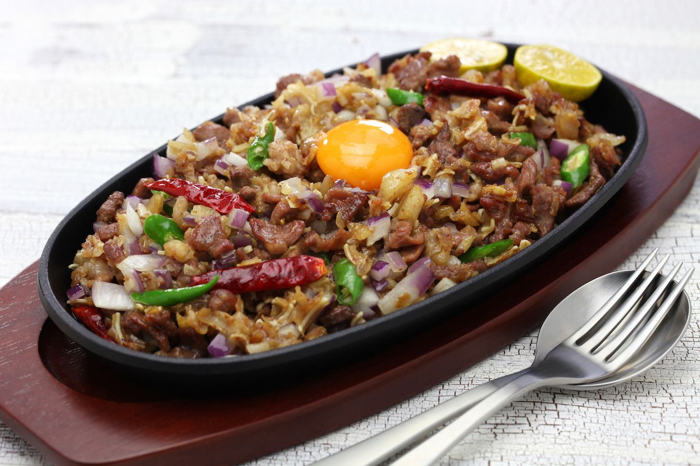
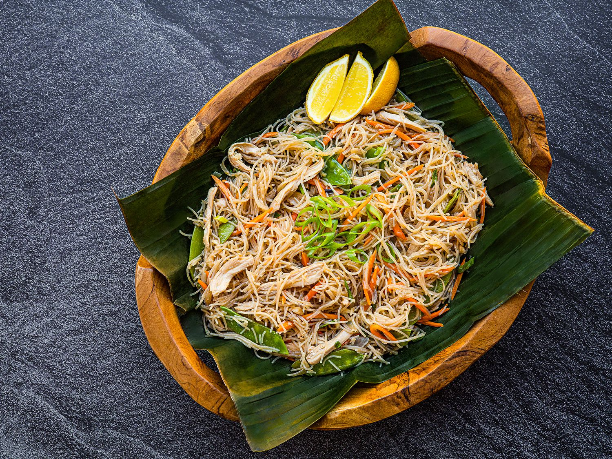
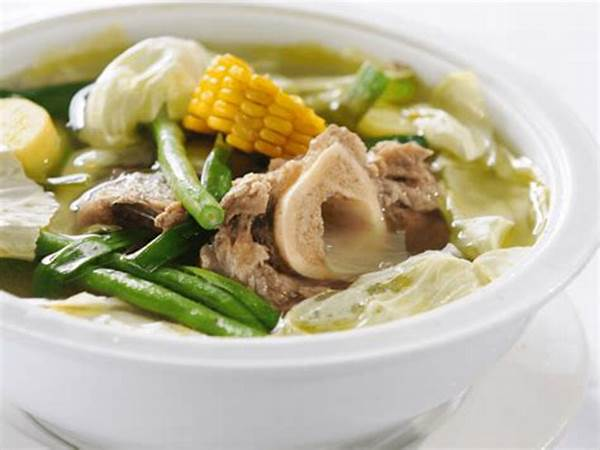
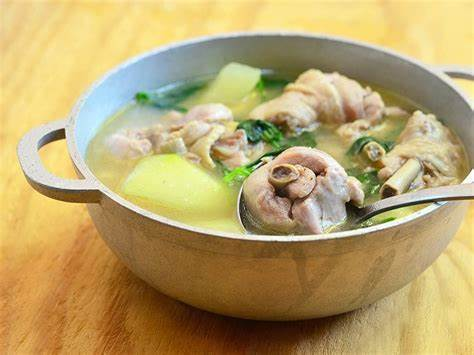

Get to know Filipino Food
in a Easy Way
Let's review some our favorite dishes.
uhmmmm sarap!!!!!
.png)
About Filipino Foods
What's the famous dish?
Filipino food is a vibrant tapestry of flavors and traditions, reflecting the country's rich history and diverse culture, where every dish tells a story—whether it's the savory delight of adobo or the comforting warmth of sinigang, each meal is a celebration of community and heritage.
Adobo is considered the most famous dish in the Philippines because it is a versatile, simple dish with readily available ingredients, representing Filipino culinary ingenuity and cultural identity, and is often seen as a "comfort food" enjoyed by people across the country, even though its name originates from Spanish cooking techniques; essentially, it's a dish that embodies the Filipino spirit of adapting and creating delicious food from what's on hand.
ViandGallery
Sinigang
Sinigang is a classic Filipino soup characterized by its sour and savory medley of flavors. It's popular comfort food in the Philippines, usually served on its own or paired with steamed rice on rainy days to ward off the cold.
See More...Shanghai
Lumpiang Shanghai is a Filipino appetizer of deep-fried spring rolls made with a ground meat filling wrapped in a thin egg crêpe.
See More...
Sisig
Sisig is a staple in Filipino cuisine, often enjoyed as a pulutan (beer match) or a flavorful main dish served with rice. This Filipino dish is originated from Pampanga, known for its bold flavors and satisfying texture.
See More...
Pancit
Pancit is a stir-fried noodle dish that consists of meat and vegetables. For Filipinos, pancit is a simple dish that symbolizes a long and happy life because it is usually served on birthdays or special occasions.
See More...
Bulalo
A popular Filipino soup dish known for its rich and comforting flavors. Its savory and slightly sweet broth, combined with the melt-in-your-mouth beef, makes bulalo a favorite comfort food in the Philippines.
See More...
Tinolang Manok
Traditional Filipino chicken soup that is both hearty and refreshing. This comforting soup is a favorite home-cooked meal, especially during rainy days or when seeking a light yet satisfying dish.
See More...